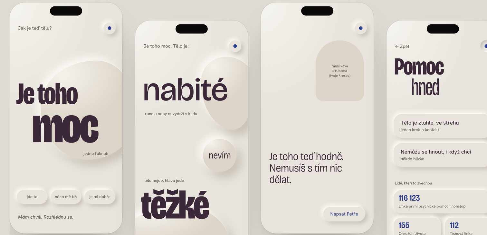
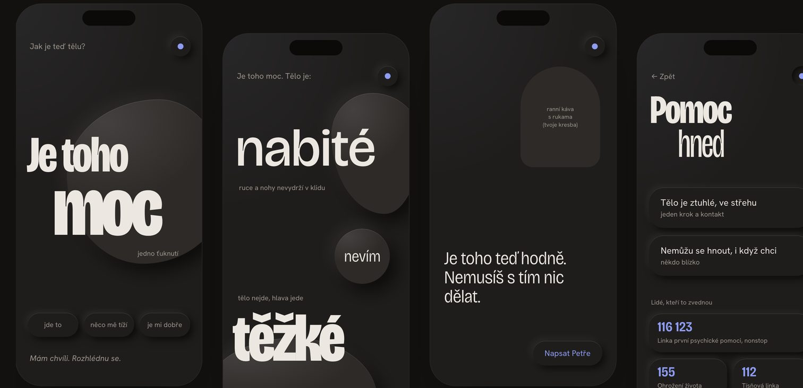

Case study · UX, service and product design
Felt &Found
An app that helps adults reach calm in the moment it gets to be too much, matched to how their body feels right now. Designed for the worst moment first.
- Role
- Solo founder, UX/UI and service designer, researcher
- Timeline
- June 2026 – ongoing
- Tools
- Figma, Figma Make, HTML prototypes, AI-assisted research synthesis
- Status
- One loop designed, hi-fi prototype and user test in preparation
The problem
Many adults already understand their stress patterns. In the moment it hits, that knowledge is out of reach.
Adults with insight into their own dysregulation can't reach regulation matched to their current state in real time, including transitions and mixed states. Existing tools fail them in three ways:
- they need intact self-reporting: pick a mood, read, decide;
- they sort people into isolated categories instead of a moving ladder of states;
- none notices when a step produced no felt shift, and none changes course.
Who: adults with insight but no access in the moment, designed through an extra lens for highly sensitive and highly empathic people.
Five design principles
- P1Body access, not knowledgeEntry and first step without words and without decisions.
- P2Full spectrumA moving ladder of states, including shutdown and mixed states.
- P3Closed loopNotices when a step didn't help and offers a different kind of step.
- P4Right orderAn entry step first, then follow-ups ordered by direction: charged or heavy.
- P5No pressureA tree grows from attention and can never wither. No scores, no streaks.
Research
I ran 17 structured research reviews, each with sources, evidence tiers (firm, directional, popular claim) and a decision at the end. Every review changed something concrete.
| Topic | What changed in the design |
|---|---|
| Entry in deep shutdown | At most one tap. When the user doesn't respond, a quiet screen with a personal line drawing and one kind sentence. Silence is not an alarm. |
| Compassionate messages | A small library of graded, original kind sentences. The user's own sentence takes priority, written only when calm. |
| State model | A two-axis map (activation × safety) with two flags instead of seven mood tiles. |
| Overwhelm split | One tap: "It's a lot. My body is: charged · heavy · don't know". "Don't know" leads to the safer branch. |
| Competition (3 reviews) | 236+ "nervous system" apps on the US App Store, and simple before/after check-ins are now common. I dropped "closed loop" as a unique claim and kept what holds up: what happens after "it didn't help", a decision-free shutdown screen, felt shift without scores, honest claims, data on the device. |
| Onboarding | Two doors from first launch: acute with no onboarding at all, and a calm door: "I have a moment. Let me look around." |
| Highly empathic people | An "empathic lens": every screen passes four check questions instead of building a separate segment. |
| Faces and eyes | No generic faces. A stranger's smile has no proven calming effect, and outward-looking eyes read as being watched. Co-regulation runs through the user's own chosen person. |
| EU law | Wellness positioning outside medical device rules. Outward language describes the experience, never the body or treatment. Nothing stored without consent. |
Key decisions
- The app never asks about state on its own. Only when the user opens it. The lock-screen widget stays neutral.
- Re-check after 2–3 minutes: a bit better · same · worse. "Nothing" is a valid result.
- Correction ladder: step back → a different type of step → a person → crisis card.
- Crisis card from anywhere, offline, through a small always-visible symbol and a hold gesture.
- Voice: state, not identity. Situation, not blame. Body first, words only after a shift. Invite, don't command. Czech copy addresses the user without grammatical gender.
- Privacy by design: data stays on the device. Nothing from an acute session is kept without consent, asked later in calm.
- Ethics: no sales screen after an acute session, no inactivity notifications, cancelling as easy as signing up.
One loop, ten screens
A hi-fi clickable prototype in Figma Make, with timers, branch memory and hidden moderator controls for testing.
- Lock screen
- How is your body?
- It's a lot: charged · heavy · don't know
- First step: look into the distance or towards the light
- Re-check
- Correction or savor
- Close
- When I don't respond
- Crisis card from anywhere
Visual language
I explored nine directions as live prototypes in four times of day, then merged the strongest three into one: oversized asymmetric type where scale carries the body state, soft relief only on what can be pressed, and organic pebble shapes in a soft light that changes from morning to night. One accent colour means only "the way to a person". Text contrast is 9–14 : 1 in every time of day.


Safety and testing
Before any session: a safety framework (how to end a session, crisis contacts, no testing with people in acute crisis), a consent text and a data record. The planned test has about five participants, at least two highly sensitive and one low-sensitivity contrast, in 60-minute moderated sessions with a debrief. Success thresholds are set before the first session:
What I learned
- Saying no is design work. Dropping personal photos, faces and gamification made the product calmer and safer.
- Evidence over hype. Many "nervous system" claims don't hold up. Describing the experience instead keeps the product honest and legally clear.
- Design for the worst moment first. If a screen works in shutdown, it works everywhere.
Next: hi-fi prototype in Figma Make, test with five people, decision point in early December 2026, then MVP scope.